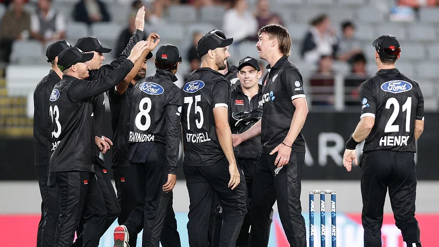

প্রধান কোচকে ছাড়াই বাংলাদেশ সফরে আসবে নিউজিল্যান্ড

শওকত হোসেন
প্রকাশ: ২৩ আগস্ট ২০২৩, ১০: ৪৬

পদ্মা সেতু চালুর পর যাত্রীসংকটের প্রভাব পড়তে শুরু করে বরগুনা–ঢাকা নৌপথের লঞ্চগুলোতে। যাত্রীসংকটের কারণে লাগাতার লোকসান হওয়ায় গতকাল মঙ্গলবার থেকে ঢাকা-বরগুনা নৌপথে লঞ্চ চলাচল বন্ধ করে দিয়েছেন লঞ্চমালিকেরা। এতে পণ্য পরিবহনে যেমন ব্যয় বৃদ্ধি পাবে, তেমনি নিম্ন আয়ের মানুষও কম ভাড়ায় নৌপথে আরামদায়ক ভ্রমণের সুযোগ থেকে বঞ্চিত হবেন।
লঞ্চমালিকেরা বলছেন, সেতু চালুর আগে একেকটি লঞ্চে বরগুনা নদীবন্দর ঘাট থেকেই প্রতিদিন ৪০০ থেকে ৫০০ যাত্রী হতো। সেখানে সেতু চালুর পর ১০০ যাত্রীও পাওয়া যাচ্ছে না। ঢাকা-বরগুনা নদীপথে ছয়টি যাত্রীবাহী লঞ্চ চলাচল করছিল। এর মধ্যে কয়েক মাস আগে যাত্রী কম হওয়ায় দুটি লঞ্চ বন্ধ হয়ে যায়। এরপর যাত্রীসংকট ও জ্বালানি তেলের মূল্যবৃদ্ধির কারণে এম কে শিপিং লাইনস কোম্পানির চারটি লঞ্চ বন্ধ করে দেন।
লঞ্চের যাত্রীরা বলছেন, লঞ্চের যাত্রা আরামদায়ক। আবার সময়ও বেশি লাগে। নিরাপদ যাতায়াতের জন্য মানুষ এখনো লঞ্চে যাতায়াত করেন। কিন্তু বরগুনা লঞ্চ বন্ধ হয়ে যাওয়ায় যাত্রীদের দুর্ভোগের শেষ নেই। আগে নিম্নবিত্ত ও মধ্যবিত্ত পরিবারের কেউ অসুস্থ হলে কম খরচে তাঁকে ঢাকা নিয়ে যাওয়া হতো। এখন তাঁদের তিন–চার গুণ বেশি টাকা খরচ করে বাসে করে ঢাকা যেতে হচ্ছে।
গত সোমবার বিকেল চারটায় বরগুনা নদীবন্দর থেকে এমভি রাজহংস-৮ নামের একটি লঞ্চ ঢাকার উদ্দেশে ছেড়ে যায়। লঞ্চটিতে ৮০ থেকে ৯০ জন যাত্রী ছিলেন। লঞ্চটিতে কাকচিড়া ও ফুলঝুড়ি ঘাট থেকে ৫০ জনের মতো যাত্রী ওঠেন। স্বাভাবিক সময় এই দুই ঘাট থেকে ২০০ থেকে ২৫০ জন যাত্রী উঠতেন।